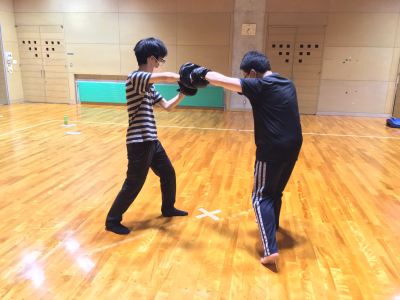
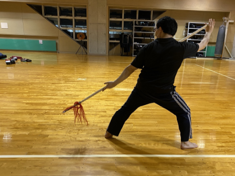
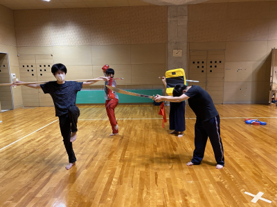
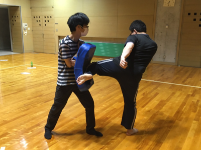
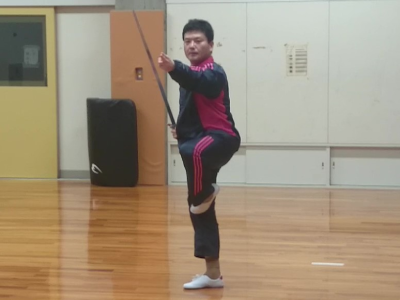
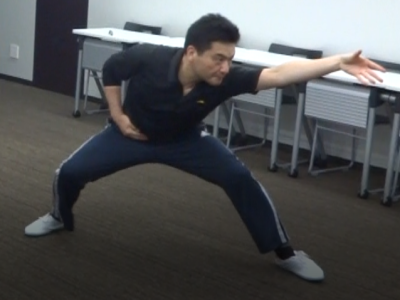
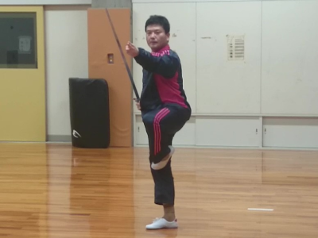
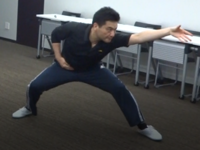

サークルの紹介
2019年後期結成。池本淳一上級准教授をコーチに迎え、このヅ大の片隅（武道場）で活動中！
現在は体力づくりやダイエットに効果的な「套路（とうろ、型のこと）」と、筋トレ・スタミナ養成に効果抜群の「散打」（さんだ、格闘競技です）という、2種類のカンフーが習えます。
刀、剣、槍などの木刀・演武用の模造刀を使った武器術もやってます。




コーチのプロフィール
池本淳一・会津大学文化研究センター上級准教授。
専門は社会学、2019年に会津大学に着任後は会津、特に喜多方市のまちづくりや地域イベント、観光の研究とICTを活用した実践に従事。
高校時代から台湾の長拳螳螂門を学び始め、以後、糸東流空手、ボクシング、競技散打を学ぶ。
2005～2010年、中国で八極拳、翻子拳など学ぶ。現在は中国の伝統武器の用法と歴史について研究中。
主著『実録 柔道対拳闘:投げるか、殴るか』
『月刊 秘伝』に時々記事を書いてます。
 



これまでの活動
| 2019年9月 | サークル結成 |
|---|---|
| 2019年秋 | 会津大学公認サークルに |
| 2020年4月 | オンライン練習会実施 |
| 2020年後期 | 金曜日を散打の練習日に |
| 2020年6月 | 月・水を自主練日に |